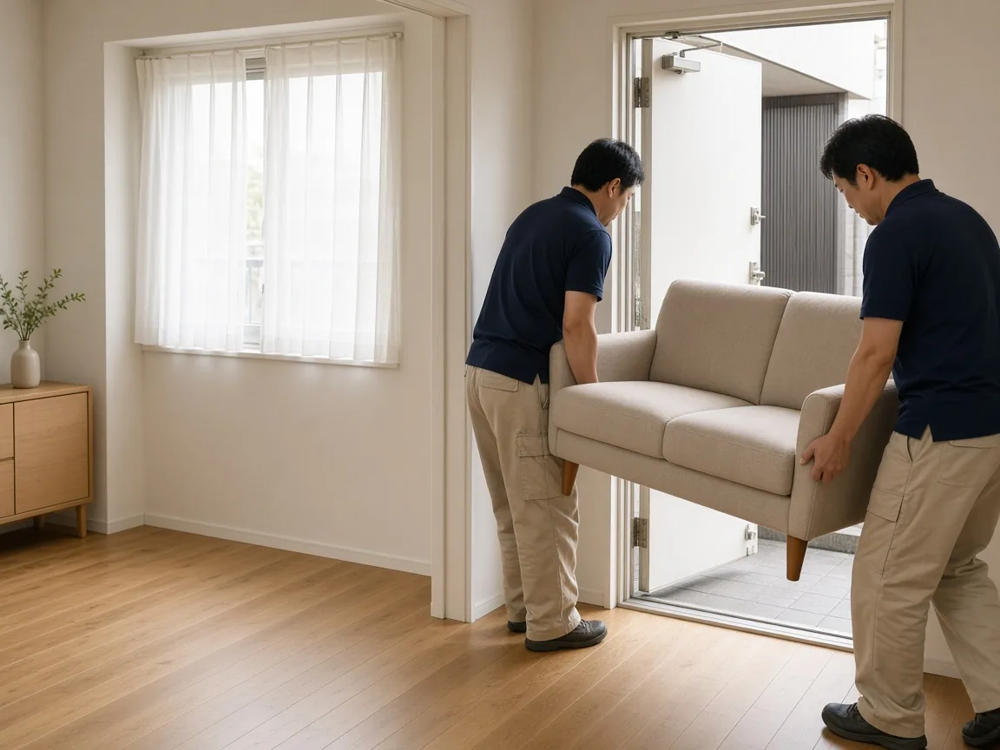
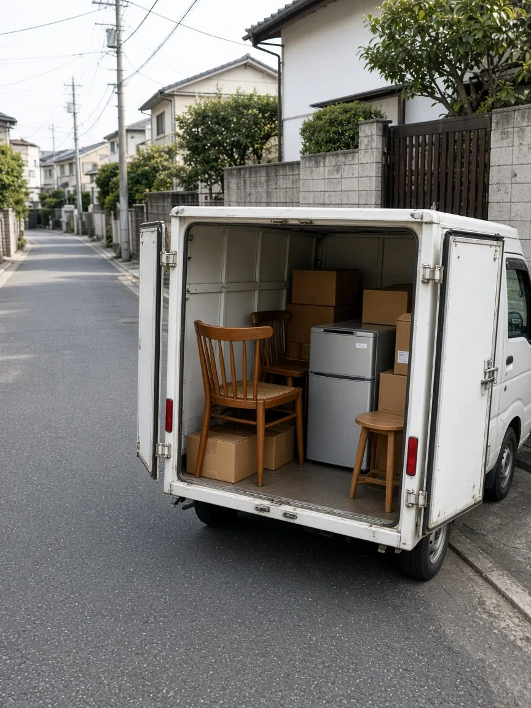
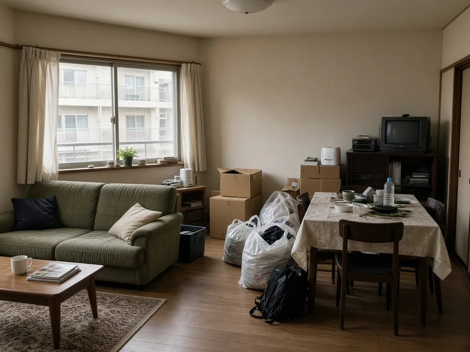
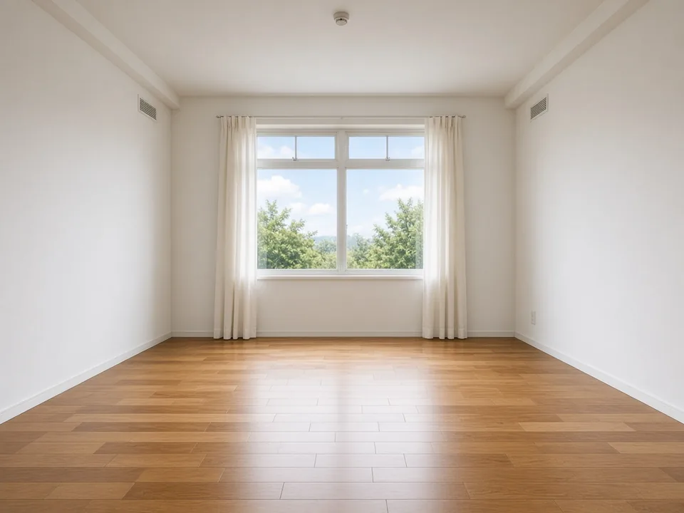
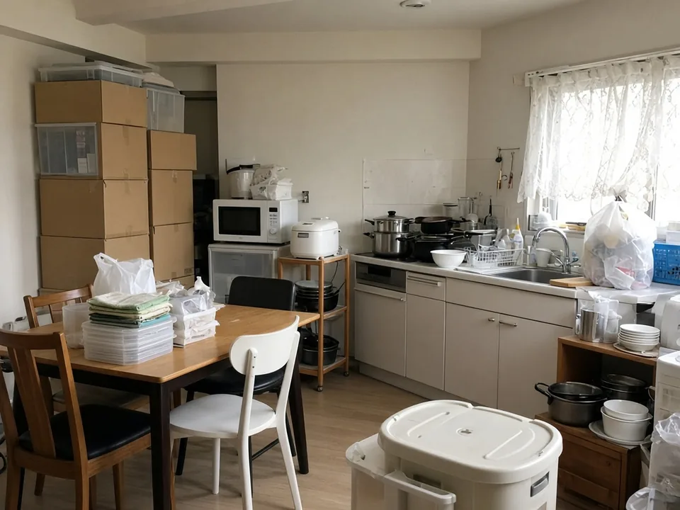
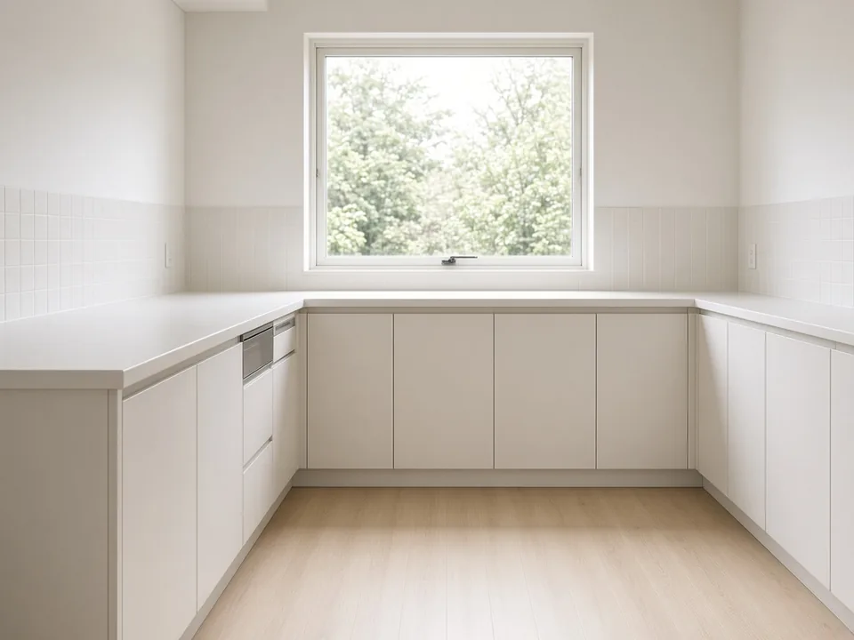

01
迅速な対応
「早く片付けたい」という時に、スムーズな対応を。お問い合わせから回収まで、できるだけお待たせしないよう進めます。
クチコミでの評価：対応の速さ／作業スピード
大阪市東淀川区の不用品回収・リサイクル回収
家具・家電・引っ越し時の不用品など、
面倒な片付けをまとめてサポート。
迅速・丁寧な対応で、
初めての方にも安心してご相談いただけます。
「これも回収できる？」のご相談だけでもかまいません。まずはお気軽にどうぞ。

Worries
そんな時は、ステルンにご相談ください。
Reason
不用品回収は、金額だけで選べるサービスではありません。家に人を招いて、その場で作業をお任せすることになるからです。ステルンが大切にしているのは、次の3つです。
01
「早く片付けたい」という時に、スムーズな対応を。お問い合わせから回収まで、できるだけお待たせしないよう進めます。
クチコミでの評価：対応の速さ／作業スピード
02
不用品を運び出すだけの作業にしません。お客様が安心して任せられるよう、一つひとつの対応を大切にしています。
クチコミでの評価：丁寧な作業／スタッフの感じの良さ
03
「いくらかかるか分からない」という不安をできるだけ減らせるよう、内容をうかがったうえで分かりやすいお見積もりをお伝えします。
クチコミでの評価：分かりやすい料金／柔軟な対応
気になることがあれば、作業をご依頼いただく前にご相談ください。
相談してみるService
ご家庭の不用品から、オフィス・店舗の什器まで。「これは頼めるのだろうか」と迷うものも、まずはお聞かせください。

使わなくなった家具の回収についてご相談いただけます。ご自分では運び出せない大きなものも、お声がけください。
ご家庭の家電の回収についてご相談いただけます。品目によって取り扱いの条件が異なる場合があります。
まだ使えるものは、リサイクル・リユースを前提とした回収も行っています。
オフィスや店舗の移転・整理などに伴う什器の回収にも対応しています。
パソコンなどの情報機器について、買取・リユースのご相談を承っています。
趣味・娯楽に関する用品の回収についてもご相談いただけます。
※回収できる品目・条件は、内容や状態によって異なります。判断に迷うものは、お問い合わせの際にお知らせください。
Price
不用品回収の費用は、「何を」「どれくらい」「どんな場所から」運び出すかで変わります。そのため、Webサイト上の一律の金額ではなく、内容をうかがったうえでお見積もりをお伝えしています。
お問い合わせの際にこの3つを分かる範囲でお知らせいただくと、お見積もりがスムーズです。写真でお伝えいただいてもかまいません。
Works
現在はレイアウト確認用のデモ画像です。実際にお引き受けした回収の様子は、店舗様から写真をご提供いただき次第、差し替えます。
CASE 01

デモ
デモ実際の作業内容は、店舗様からのご提供後に掲載します。
CASE 02

デモ
デモ実際の作業内容は、店舗様からのご提供後に掲載します。
Voice
お寄せいただいているクチコミには、次のような評価が多く見られます。
※Googleマップに寄せられたクチコミの傾向をまとめたものです。本文の転載は行っていません。評価・件数は変動します。
気になる点があれば、ご依頼の前に何でもお尋ねください。
まずは相談するFlow
初めてでも迷わないよう、ご依頼の流れをご案内します。
STEP01
お電話またはお問い合わせフォームからご相談ください。不用品の種類や量を、分かる範囲でお知らせください。
STEP02
回収するものや搬出の条件をうかがい、お見積もりをお伝えします。
STEP03
内容と金額をご確認のうえ、ご依頼ください。作業の日程を調整します。
STEP04
当日はスタッフがうかがい、不用品を搬出・回収します。
ご依頼を決める前の段階でも、お問い合わせいただけます。
まずは相談してみるFAQ
家具・家電をはじめ、オフィス・店舗什器、パソコンなどの情報機器についてご相談いただけます。品目や状態によってお受けできない場合もありますので、判断に迷うものはお問い合わせの際にお知らせください。
「まずは金額だけ知りたい」というご相談も承っています。お電話またはお問い合わせフォームから、不用品の種類や量を分かる範囲でお知らせください。
お急ぎの場合も、まずはご希望の日程をお知らせください。できるだけ早く対応できるよう日程を調整いたします。
ご自分では運び出せない大きな家具についてもご相談いただけます。搬出経路や階数、エレベーターの有無などをお知らせいただくと、お見積もりがスムーズです。
オフィス・店舗什器の回収にも対応しています。移転・整理・入れ替えなどに伴う回収について、内容をお聞かせください。
不用品の品目・量・搬出の条件によって変わるため、一律の金額をお伝えすることができません。内容をうかがったうえでお見積もりをお伝えしますので、まずはお問い合わせください。
Contact
「何を回収してもらえる？」
「どれくらい費用がかかる？」
「自分の場合でも頼める？」
そんな疑問も、まずはお気軽にご相談ください。
写真を送っていただくと、状況が伝わりやすくなります。
LINEの受付は準備中です不用品の種類や量など、分かる範囲でお聞かせください。折り返しご連絡いたします。
Access